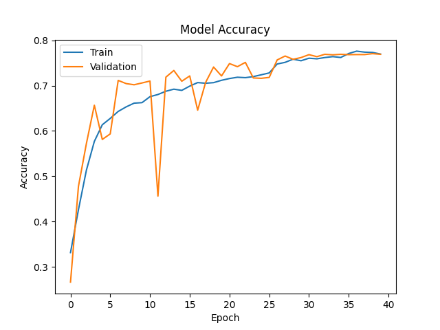
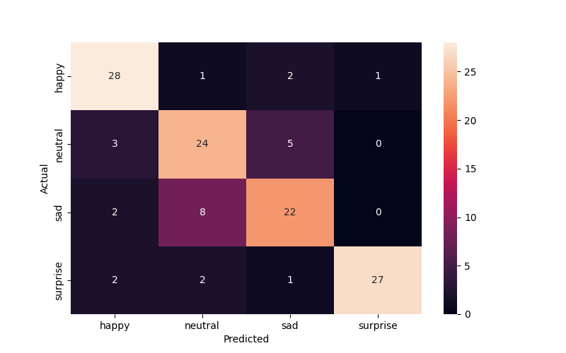

        <html>
        <head><title>Model Summary - 2024-04-10 13:33:30</title></head>
        <body>
        <h1>Model Configuration</h1>
        <pre>model:
  compile:
    learning_rate: 0.01
    optimizer: Adam
    optimizer_name: adam
  data:
    color_layers: 1
    color_mode: grayscale
    img_height: 48
    img_width: 48
    use_data_loaders: true
  layers:
  - filters: 64
    kernel_size:
    - 2
    - 2
    padding: same
    type: Conv2D
  - type: BatchNormalization
  - alpha: 0.1
    type: LeakyReLU
  - pool_size:
    - 2
    - 2
    type: MaxPooling2D
  - filters: 128
    kernel_size:
    - 2
    - 2
    padding: same
    type: Conv2D
  - type: BatchNormalization
  - alpha: 0.1
    type: LeakyReLU
  - pool_size:
    - 2
    - 2
    type: MaxPooling2D
  - filters: 256
    kernel_size:
    - 2
    - 2
    padding: same
    type: Conv2D
  - type: BatchNormalization
  - alpha: 0.1
    type: LeakyReLU
  - pool_size:
    - 2
    - 2
    type: MaxPooling2D
  - filters: 512
    kernel_size:
    - 2
    - 2
    padding: same
    type: Conv2D
  - type: BatchNormalization
  - alpha: 0.1
    type: LeakyReLU
  - pool_size:
    - 2
    - 2
    type: MaxPooling2D
  - filters: 128
    kernel_size:
    - 2
    - 2
    padding: same
    type: Conv2D
  - type: BatchNormalization
  - alpha: 0.1
    type: LeakyReLU
  - pool_size:
    - 2
    - 2
    type: MaxPooling2D
  - type: Flatten
  - activation: relu
    type: Dense
    units: 512
  - activation: relu
    type: Dense
    units: 128
  - type: Dense
    units: 64
  - type: BatchNormalization
  - type: ReLU
  - activation: softmax
    type: Dense
    units: 4
  train:
    batch_size: 16
    epochs: 40
    patience: 7
</pre>
        <h1>Model Summary</h1>
        <pre>Model: "sequential"
┏━━━━━━━━━━━━━━━━━━━━━━━━━━━━━━━━━━━━━━┳━━━━━━━━━━━━━━━━━━━━━━━━━━━━━┳━━━━━━━━━━━━━━━━━┓
┃ Layer (type)                         ┃ Output Shape                ┃         Param # ┃
┡━━━━━━━━━━━━━━━━━━━━━━━━━━━━━━━━━━━━━━╇━━━━━━━━━━━━━━━━━━━━━━━━━━━━━╇━━━━━━━━━━━━━━━━━┩
│ conv2d (Conv2D)                      │ (None, 48, 48, 64)          │             320 │
├──────────────────────────────────────┼─────────────────────────────┼─────────────────┤
│ batch_normalization                  │ (None, 48, 48, 64)          │             256 │
│ (BatchNormalization)                 │                             │                 │
├──────────────────────────────────────┼─────────────────────────────┼─────────────────┤
│ leaky_re_lu (LeakyReLU)              │ (None, 48, 48, 64)          │               0 │
├──────────────────────────────────────┼─────────────────────────────┼─────────────────┤
│ max_pooling2d (MaxPooling2D)         │ (None, 24, 24, 64)          │               0 │
├──────────────────────────────────────┼─────────────────────────────┼─────────────────┤
│ conv2d_1 (Conv2D)                    │ (None, 24, 24, 128)         │          32,896 │
├──────────────────────────────────────┼─────────────────────────────┼─────────────────┤
│ batch_normalization_1                │ (None, 24, 24, 128)         │             512 │
│ (BatchNormalization)                 │                             │                 │
├──────────────────────────────────────┼─────────────────────────────┼─────────────────┤
│ leaky_re_lu_1 (LeakyReLU)            │ (None, 24, 24, 128)         │               0 │
├──────────────────────────────────────┼─────────────────────────────┼─────────────────┤
│ max_pooling2d_1 (MaxPooling2D)       │ (None, 12, 12, 128)         │               0 │
├──────────────────────────────────────┼─────────────────────────────┼─────────────────┤
│ conv2d_2 (Conv2D)                    │ (None, 12, 12, 256)         │         131,328 │
├──────────────────────────────────────┼─────────────────────────────┼─────────────────┤
│ batch_normalization_2                │ (None, 12, 12, 256)         │           1,024 │
│ (BatchNormalization)                 │                             │                 │
├──────────────────────────────────────┼─────────────────────────────┼─────────────────┤
│ leaky_re_lu_2 (LeakyReLU)            │ (None, 12, 12, 256)         │               0 │
├──────────────────────────────────────┼─────────────────────────────┼─────────────────┤
│ max_pooling2d_2 (MaxPooling2D)       │ (None, 6, 6, 256)           │               0 │
├──────────────────────────────────────┼─────────────────────────────┼─────────────────┤
│ conv2d_3 (Conv2D)                    │ (None, 6, 6, 512)           │         524,800 │
├──────────────────────────────────────┼─────────────────────────────┼─────────────────┤
│ batch_normalization_3                │ (None, 6, 6, 512)           │           2,048 │
│ (BatchNormalization)                 │                             │                 │
├──────────────────────────────────────┼─────────────────────────────┼─────────────────┤
│ leaky_re_lu_3 (LeakyReLU)            │ (None, 6, 6, 512)           │               0 │
├──────────────────────────────────────┼─────────────────────────────┼─────────────────┤
│ max_pooling2d_3 (MaxPooling2D)       │ (None, 3, 3, 512)           │               0 │
├──────────────────────────────────────┼─────────────────────────────┼─────────────────┤
│ conv2d_4 (Conv2D)                    │ (None, 3, 3, 128)           │         262,272 │
├──────────────────────────────────────┼─────────────────────────────┼─────────────────┤
│ batch_normalization_4                │ (None, 3, 3, 128)           │             512 │
│ (BatchNormalization)                 │                             │                 │
├──────────────────────────────────────┼─────────────────────────────┼─────────────────┤
│ leaky_re_lu_4 (LeakyReLU)            │ (None, 3, 3, 128)           │               0 │
├──────────────────────────────────────┼─────────────────────────────┼─────────────────┤
│ max_pooling2d_4 (MaxPooling2D)       │ (None, 1, 1, 128)           │               0 │
├──────────────────────────────────────┼─────────────────────────────┼─────────────────┤
│ flatten (Flatten)                    │ (None, 128)                 │               0 │
├──────────────────────────────────────┼─────────────────────────────┼─────────────────┤
│ dense (Dense)                        │ (None, 512)                 │          66,048 │
├──────────────────────────────────────┼─────────────────────────────┼─────────────────┤
│ dense_1 (Dense)                      │ (None, 128)                 │          65,664 │
├──────────────────────────────────────┼─────────────────────────────┼─────────────────┤
│ dense_2 (Dense)                      │ (None, 64)                  │           8,256 │
├──────────────────────────────────────┼─────────────────────────────┼─────────────────┤
│ batch_normalization_5                │ (None, 64)                  │             256 │
│ (BatchNormalization)                 │                             │                 │
├──────────────────────────────────────┼─────────────────────────────┼─────────────────┤
│ re_lu (ReLU)                         │ (None, 64)                  │               0 │
├──────────────────────────────────────┼─────────────────────────────┼─────────────────┤
│ dense_3 (Dense)                      │ (None, 4)                   │             260 │
└──────────────────────────────────────┴─────────────────────────────┴─────────────────┘
 Total params: 1,096,452 (4.18 MB)
 Trainable params: 1,094,148 (4.17 MB)
 Non-trainable params: 2,304 (9.00 KB)
</pre>
        <h2>Test Accuracy</h2>
        <p>
1/8 ━━━━━━━━━━━━━━━━━━━━ 0s 16ms/step - accuracy: 0.8750 - loss: 0.3105
8/8 ━━━━━━━━━━━━━━━━━━━━ 0s 2ms/step - accuracy: 0.8108 - loss: 0.4502 

1/8 ━━━━━━━━━━━━━━━━━━━━ 3s 487ms/step
8/8 ━━━━━━━━━━━━━━━━━━━━ 1s 3ms/step  
</p>
        <h2>Accuracy Plot</h2>
        
        <h2>Classification Report</h2>
        <pre>              precision    recall  f1-score   support

       happy       0.80      0.88      0.84        32
     neutral       0.69      0.75      0.72        32
         sad       0.73      0.69      0.71        32
    surprise       0.96      0.84      0.90        32

    accuracy                           0.79       128
   macro avg       0.80      0.79      0.79       128
weighted avg       0.80      0.79      0.79       128

</pre>
        <h2>History</h2>
        <pre>Epoch 1: accuracy: 0.3313, loss: 1.3375, val_accuracy: 0.2660, val_loss: 1.5080, learning_rate: 0.0100
Epoch 2: accuracy: 0.4260, loss: 1.2039, val_accuracy: 0.4776, val_loss: 1.1406, learning_rate: 0.0100
Epoch 3: accuracy: 0.5133, loss: 1.0768, val_accuracy: 0.5722, val_loss: 0.9849, learning_rate: 0.0100
Epoch 4: accuracy: 0.5769, loss: 0.9827, val_accuracy: 0.6568, val_loss: 0.8445, learning_rate: 0.0100
Epoch 5: accuracy: 0.6137, loss: 0.9230, val_accuracy: 0.5813, val_loss: 1.0108, learning_rate: 0.0100
Epoch 6: accuracy: 0.6277, loss: 0.8835, val_accuracy: 0.5935, val_loss: 1.1005, learning_rate: 0.0100
Epoch 7: accuracy: 0.6431, loss: 0.8579, val_accuracy: 0.7117, val_loss: 0.7240, learning_rate: 0.0100
Epoch 8: accuracy: 0.6532, loss: 0.8369, val_accuracy: 0.7046, val_loss: 0.7300, learning_rate: 0.0100
Epoch 9: accuracy: 0.6614, loss: 0.8214, val_accuracy: 0.7020, val_loss: 0.7261, learning_rate: 0.0100
Epoch 10: accuracy: 0.6626, loss: 0.8129, val_accuracy: 0.7060, val_loss: 0.7204, learning_rate: 0.0100
Epoch 11: accuracy: 0.6758, loss: 0.7915, val_accuracy: 0.7103, val_loss: 0.7270, learning_rate: 0.0100
Epoch 12: accuracy: 0.6805, loss: 0.7761, val_accuracy: 0.4561, val_loss: 1.3274, learning_rate: 0.0100
Epoch 13: accuracy: 0.6877, loss: 0.7709, val_accuracy: 0.7189, val_loss: 0.7017, learning_rate: 0.0100
Epoch 14: accuracy: 0.6923, loss: 0.7553, val_accuracy: 0.7336, val_loss: 0.6820, learning_rate: 0.0100
Epoch 15: accuracy: 0.6897, loss: 0.7544, val_accuracy: 0.7099, val_loss: 0.7232, learning_rate: 0.0100
Epoch 16: accuracy: 0.6991, loss: 0.7425, val_accuracy: 0.7215, val_loss: 0.6935, learning_rate: 0.0100
Epoch 17: accuracy: 0.7069, loss: 0.7281, val_accuracy: 0.6460, val_loss: 0.9201, learning_rate: 0.0100
Epoch 18: accuracy: 0.7054, loss: 0.7289, val_accuracy: 0.7073, val_loss: 0.7105, learning_rate: 0.0100
Epoch 19: accuracy: 0.7067, loss: 0.7246, val_accuracy: 0.7412, val_loss: 0.6648, learning_rate: 0.0100
Epoch 20: accuracy: 0.7119, loss: 0.7202, val_accuracy: 0.7215, val_loss: 0.6930, learning_rate: 0.0100
Epoch 21: accuracy: 0.7158, loss: 0.7130, val_accuracy: 0.7488, val_loss: 0.6232, learning_rate: 0.0100
Epoch 22: accuracy: 0.7186, loss: 0.7012, val_accuracy: 0.7420, val_loss: 0.6312, learning_rate: 0.0100
Epoch 23: accuracy: 0.7177, loss: 0.6974, val_accuracy: 0.7515, val_loss: 0.6363, learning_rate: 0.0100
Epoch 24: accuracy: 0.7201, loss: 0.6975, val_accuracy: 0.7171, val_loss: 0.7404, learning_rate: 0.0100
Epoch 25: accuracy: 0.7241, loss: 0.6853, val_accuracy: 0.7163, val_loss: 0.7183, learning_rate: 0.0100
Epoch 26: accuracy: 0.7282, loss: 0.6759, val_accuracy: 0.7183, val_loss: 0.6992, learning_rate: 0.0100
Epoch 27: accuracy: 0.7479, loss: 0.6367, val_accuracy: 0.7569, val_loss: 0.6000, learning_rate: 0.0020
Epoch 28: accuracy: 0.7515, loss: 0.6185, val_accuracy: 0.7655, val_loss: 0.5904, learning_rate: 0.0020
Epoch 29: accuracy: 0.7586, loss: 0.6057, val_accuracy: 0.7583, val_loss: 0.6116, learning_rate: 0.0020
Epoch 30: accuracy: 0.7550, loss: 0.6100, val_accuracy: 0.7621, val_loss: 0.5958, learning_rate: 0.0020
Epoch 31: accuracy: 0.7607, loss: 0.6014, val_accuracy: 0.7685, val_loss: 0.5841, learning_rate: 0.0020
Epoch 32: accuracy: 0.7593, loss: 0.5986, val_accuracy: 0.7641, val_loss: 0.5987, learning_rate: 0.0020
Epoch 33: accuracy: 0.7622, loss: 0.5940, val_accuracy: 0.7693, val_loss: 0.5886, learning_rate: 0.0020
Epoch 34: accuracy: 0.7642, loss: 0.5933, val_accuracy: 0.7681, val_loss: 0.5843, learning_rate: 0.0020
Epoch 35: accuracy: 0.7623, loss: 0.5880, val_accuracy: 0.7693, val_loss: 0.5847, learning_rate: 0.0020
Epoch 36: accuracy: 0.7711, loss: 0.5879, val_accuracy: 0.7685, val_loss: 0.5845, learning_rate: 0.0020
Epoch 37: accuracy: 0.7763, loss: 0.5646, val_accuracy: 0.7687, val_loss: 0.5769, learning_rate: 0.0004
Epoch 38: accuracy: 0.7741, loss: 0.5732, val_accuracy: 0.7687, val_loss: 0.5734, learning_rate: 0.0004
Epoch 39: accuracy: 0.7734, loss: 0.5685, val_accuracy: 0.7707, val_loss: 0.5741, learning_rate: 0.0004
Epoch 40: accuracy: 0.7699, loss: 0.5722, val_accuracy: 0.7693, val_loss: 0.5769, learning_rate: 0.0004
</pre>
        <h2>Confusion Matrix</h2>
        
        <h2>Predicted Images</h2>
        
        </body>
        </html>
        